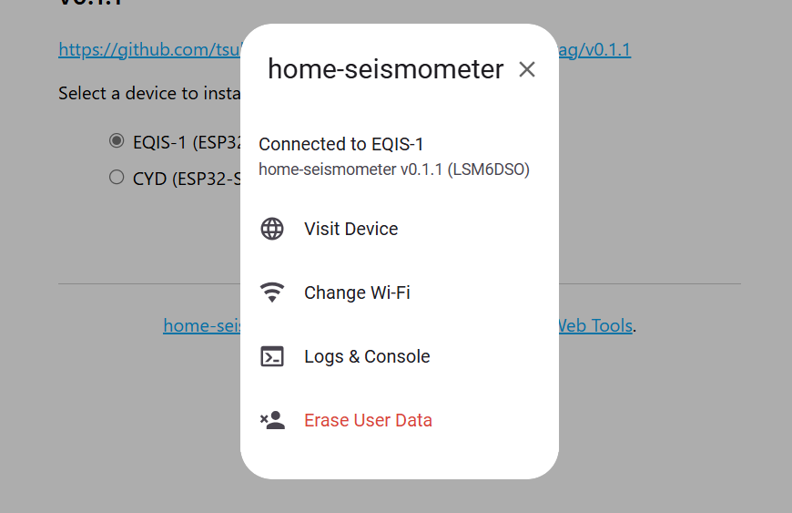

home-seismometer
インストール方法
- PCとデバイスをUSBケーブルで接続します。
- インストールするデバイスとバージョンを選択し、"Connect"を押下します。
-
デバイスのシリアルポートを選択して接続します。
（EQIS-1 XIAO ESP32S3の場合、"USB JTAG/serial"） -
画面の指示に従ってインストールとWi-Fiの設定を行います。
ファームウェアを書き込むとNVS領域が削除されます。以前デバイスでWi-Fiを使用していた場合でも再度設定が必要です。 Wi-Fiの設定画面が表示されないときは、一度USBケーブルを抜いて再接続します。 -
Wi-Fi接続完了後、"Visit Device"を選択するとWeb UIに遷移します。
ブラウザのローカルネットワークへのアクセス許可が必要です。
Install
Select a device to install the firmware.
インストール 対応ブラウザ
- Google Chrome
- Microsoft Edge
操作イメージ
